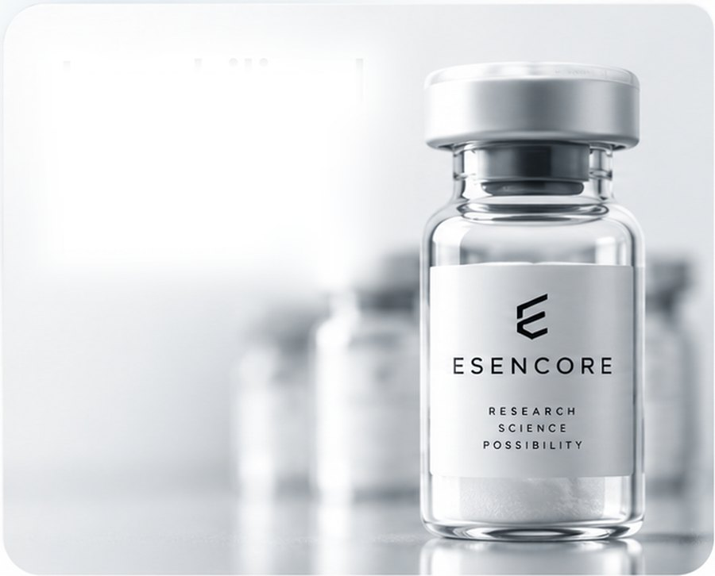
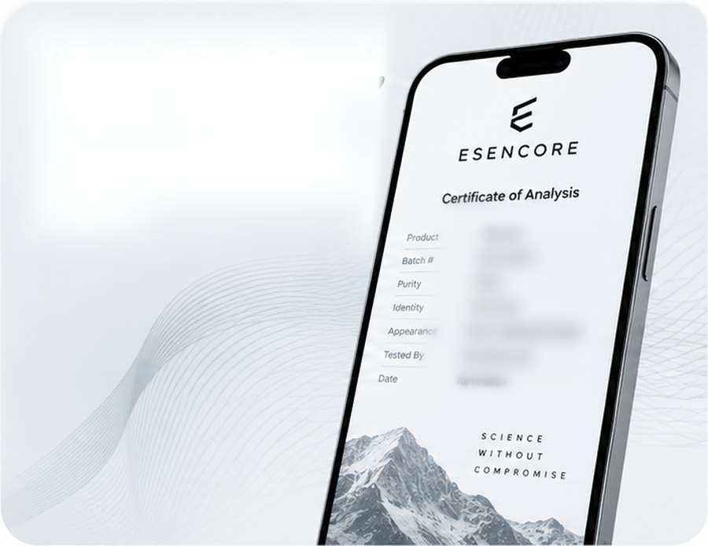
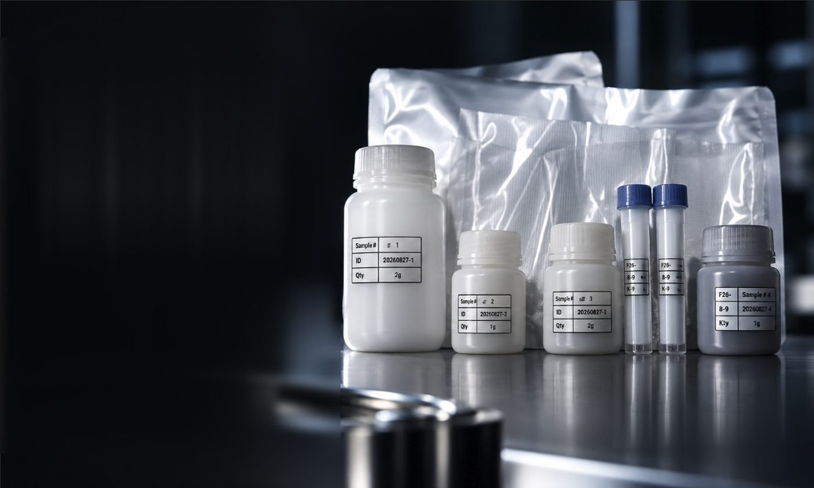

Esencore / U.S. Peptide Manufacturing
The Next StandardIn PeptideManufacturing.
Precision manufacturing. Controlled processes. Analytical verification. Batch-level traceability.
Manufacturing proof
-

Lyophilizedin the USA.
Precision formulation.
Made in-house. -
No moreguessing games.
US-made. Tested before
and after production. -

Batch Produced,Batch Tested.
COAs available for each batch.
Manufacturing Capabilities
Built ForWhat’s Next.
From raw material qualification through finished lyophilized product, Esencore brings critical manufacturing processes together under one controlled operation.
Select a stage

Formulation
ControlledPreparation.
Formulation begins once incoming material has been identified and qualified. Preparation is carried out to defined specifications and recorded as performed, so the conditions behind a batch stay readable long after it leaves the floor.
- Documented
Batch Processing - Defined
Specifications - Precision Filling
And Stoppering
Quality today. Confidence tomorrow.
From material
to meaningful results
Lyophilization
Freeze-Drying,Under Control.
Filled and stoppered vials move into controlled freeze-drying cycles. Cycle conditions are set against the product, held through the run, and captured in the record that travels with the batch.
SP VirTis lyophilization
Controlled freeze-drying cycles
Small-batch manufacturing capability

Analytical
Measured,Not Assumed.
Chromatographic analysis supports identity, purity and quantitative testing where validated methods exist. Runs are associated directly with the sample record rather than reported in isolation.
HPLC / DAD
Identity, purity and quantitative testing
Runs bound to the sample record

Quality & Traceability
Quality Isn’tA Final Step.
Every Esencore program is built around documented workflows, sample traceability, analytical review and controlled batch records — so the record of a batch stays with the people who produced it.

Manufacturing Partnerships
Your Brand.Our Infrastructure.
Esencore provides manufacturing solutions for research-focused organizations that need greater visibility, documentation and control over their production programs.
Esencore / Simi Valley, California

Manufacturing,Analytical ScienceAnd QualityUnder One Roof.
Esencore operates from Simi Valley, California, with production, lyophilization, analytical instrumentation and quality documentation under a single roof. Processing areas are HEPA-filtered and environmentally controlled, refrigerated and frozen storage is held on site, and batch workflows are documented from intake through release.
Esencore
Science | Quality | Higher Standards
Precision.Purity.Performance.
Build your next manufacturing program with Esencore.